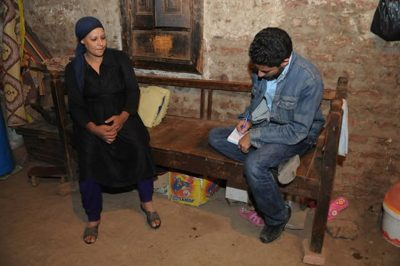
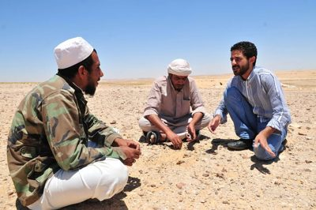
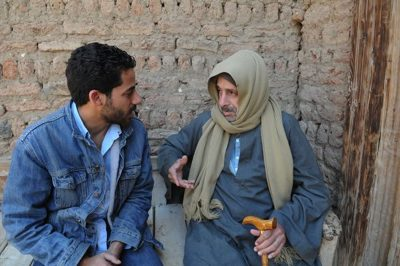
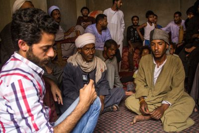
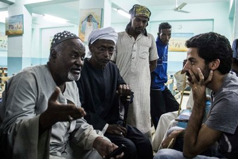
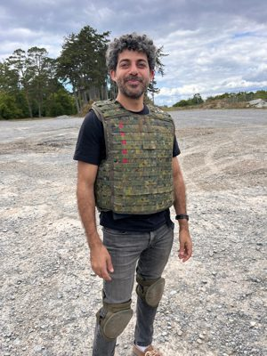
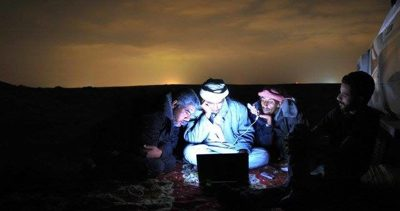
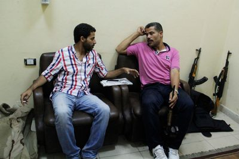

Ahmed Ragab
Investigative journalist with a career spanning twenty years. Headed the investigations unit and later the digital newsroom at Al-Masry Al-Youm, produced Egyptian talk shows including Akher Kalam and With Mona El-Shazly, and co-founded The 5th Estate on Deutsche Welle Arabic — and its digital platform, which I now run.








Have a tip? A lead for an investigation? Get in touch — all messages are confidential and sources are protected.
Info@ahmedragab.net